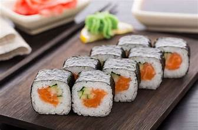

Kitchen Tips
- 🔪Cooking Tips
- 🧼Cleaning Tips
- 🧊Storage Tips
Recipe: Sushi

Ingredients
- 1 cup sushi rice
- 2 tbsp rice vinegar
- 1 tbsp sugar
- 1/2 tsp salt
- 4 sheets nori (seaweed)
- 1 small cucumber, julienned
- 1 small carrot, julienned
- 1 avocado, sliced
- 100g cooked or raw fish (like salmon or tuna) – optional
- Soy sauce, for serving
- Pickled ginger & wasabi (optional)
- Bamboo sushi mat (for rolling)
Instructions
- Rinse sushi rice thoroughly. Cook according to package instructions.
- In a small bowl, mix rice vinegar, sugar, and salt. Heat slightly to dissolve, then mix into the cooked rice. Let cool.
- Place a sheet of nori on the bamboo mat, shiny side down.
- Spread a thin layer of sushi rice on the nori, leaving 1 inch of space at the top.
- Arrange fillings (vegetables, fish, etc.) horizontally about 1 inch from the bottom.
- Use the mat to carefully roll the sushi from the bottom, pressing gently to form a tight roll.
- Seal the edge with a little water and slice the roll into 6–8 pieces using a sharp, wet knife.
- Repeat for remaining ingredients.
- Serve with soy sauce, wasabi, and pickled ginger. Enjoy!